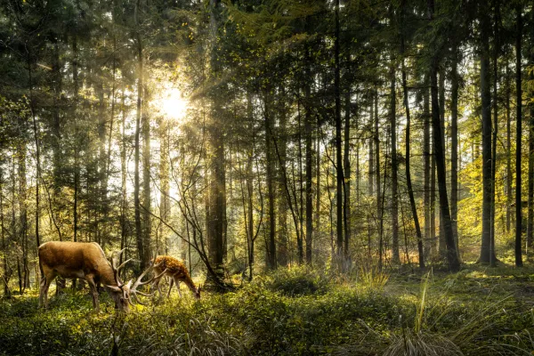

🌿Trabajo de investigación: Ecosistema del bosque
Alumnos: Lara Abigail Rodríguez Allende - Santino Ezequiel Ybalo
6 grado A
🌳 ¿Qué es un Bosque?
Un bosque es un ecosistema terrestre dominado por árboles y arbustos, con interacciones complejas entre fauna, suelo, agua y atmósfera. Cubren aproximadamente un tercio de la superficie terrestre y son esenciales para la vida en la Tierra.
✨ Características esenciales
Estratificación vertical
Dosel superior, sotobosque denso y suelo con materia orgánica. Capas que albergan microclimas únicos.
Biodiversidad excepcional
Hogar del 80% de anfibios, aves y mamíferos; millones de especies aún por descubrir.
Biomasa elevada
Acumulan enorme cantidad de carbono y materia orgánica por unidad de superficie.
Creación de microclima
Humedad y temperatura interna estable, regulando el ambiente regional y local.
🌲 Tipos de bosque según el clima
 Cálido y húmedo
Cálido y húmedo
🌴 Bosque Tropical
- Temperatura: 20°C – 25°C anuales, sin estación fría.
- Clima: Precipitaciones abundantes todo el año, alta humedad.
- Suelo: Pobre en nutrientes, pese a vegetación exuberante (descomposición rápida).
- Flora: Árboles de hoja ancha perenne (caoba, ceiba), orquídeas, lianas, palmas.
- Fauna: Jaguares, monos, perezosos, tucanes, infinidad de insectos.
- Ubicación: Amazonas, Congo, Sudeste Asiático.

4 estaciones🍂 Bosque Templado
- Temperatura: -30°C a 30°C (amplitud térmica); media 10-12°C.
- Clima: Estaciones marcadas, precipitaciones moderadas.
- Suelo: Fértil, rico en humus por descomposición lenta de hojarasca.
- Flora: Robles, hayas, nogales; coníferas como abetos.
- Fauna: Ciervos, lobos, linces, osos pardos/negros, aves variadas.
- Ubicación: Norteamérica, Europa, Asia oriental.
 Subpolar / frío
Subpolar / frío
❄️ Bosque Boreal (Taiga)
- Temperatura: Media anual < 0°C, inviernos largos y gélidos.
- Clima: Frío extremo, nieve abundante, verano breve.
- Suelo: Poco fértil, ácido por acumulación de agujas de coníferas.
- Flora: Coníferas perennifolias: pinos, abetos, piceas, cedros.
- Fauna: Alces, caribúes, lobos, osos pardos, linces, aves migratorias.
- Ubicación: Rusia, Canadá, Alaska, Escandinavia.
📍 Distribución mundial
💚 Importancia crítica de los bosques
Regulación climática
Sumideros de carbono, absorben CO₂ mitigando el cambio climático.
Producción de oxígeno
Fotosíntesis masiva, generan el aire que respiramos.
Conservación del suelo y agua
Raíces evitan erosión, filtran agua y recargan acuíferos.
Hogar de la biodiversidad
70% de biodiversidad terrestre mundial, refugio de millones de especies.
Recursos y sustento
Madera, alimentos, medicinas; medios de vida para ~1.000 millones de personas.
Estratificación y microclimas
Generan condiciones únicas que protegen ecosistemas delicados.
"Los bosques son los pulmones de nuestra tierra, purificando el aire y dando energía pura a nuestros pueblos."
🌎 Protegerlos es garantizar el futuro del planeta.